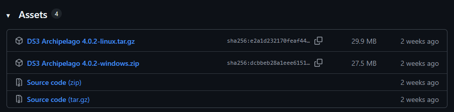
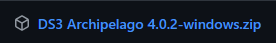
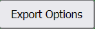
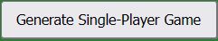

games
games
Dark Souls Setup Guide
Requirements
- Dark Souls III on steam
- Dark Souls III AP Client
Optional Software
Backing up saves (optional)
It shouldn't be necessary but to backup your saves:
- Open windows bar and type %appdata%
- Navigate to DarkSoulsIII > [user_id]
- Save all the files in here to some other location on your computer as a backup
Downloading Dark Souls III AP Client
-
Go to the Dark Souls III
AP Client
website and scroll down slightly until you see

-
Download the most recent Windows zip version

- Unzip the download anywhere. It will auto-locate DS3 in your steam folder.
Setting up your randmoizer config (YAML SETUP)
What is a YAML?
YAML is just the config file that will tell the Archipelago mod all settings to randomize or change for your game. The host of your game (probably Bert) will need a YAML file from each player in order to generate the multi-world.
How do I set it up?
- Go to the official options page for Hollow Knight
- Enter a Player Name. This doesn't need to be your in-game name, it just needs to be unique to our other worlds (so don't call it Edwin if you are playing with him too)
-
Select whatever settings you want. You can make it as easy or hard as you want here.
Note: HIGHLY encouraged to read the recommended options section before changing "Progression Balancing" -
Scroll to the bottom and export your YAML based on your gametype
- For multi-worlds select

- For single-player you can generate your game using

- For multi-worlds select
- If playing a multi-world send your YAML file to whoever is hosting your game.
Recommended Options
This section is designed for non-experts at Dark Souls III to help make sure they don't build a
randomizer that requires SL1-all bosses skill level to beat.
You can also hover over the (?) on the options page for details on any of the settings,
these are just some notes on the important ones.
-
Progression Balancing
- This slider basically determines how quickly you get "major" checks. I highly recommend leaving at 50 but if you want to progress in your game a little more quickly you can increase it slightly. e.g. Setting to 99 caused a DS3 run to have all lord souls within the first hour of the run (boring).
-
Accessibility
- Recommend leaving at Full unless you know a bunch of sequence breaks/tricks and are really good at combat.
-
Early Small Lothric Banner
- Probably best to enable this to make sure you don't get BK'd immediately.
-
Late Basin of Vows
- Personally I'd leave off because its a randomizer so going to lothric early shouldn't really give you an advantage. Especially with auto-equip.
-
Death Link
- I mean c'mon. Yes.
-
Enable NG+
- I mean if you really want to make the run go on forever but I know even you (Brandon) don't remember all the +3 ring locations.
-
Auto Equip/Lock Equipment Slots
-
There is really two ways to do this and still have fun:
-
Locked auto-equip - You won't be able to change any of your equipment.
Once you (or another world) picks something up it stays on.
If doing this I HIGHLY recommend enabling No Equip Load and No Weapon Requirements so you won't be fat rolling with a 4 base damage weapon the whole game.
Good luck ever using an upgraded weapon. - Unlocked auto-equip - You can change your equipment but you might get screwed in a boss fight when suddenly you're fat rolling because someone just gave you the pursuer shield. Less difficult than locked but also less fun imo. If doing this one keep the equip load and weapon requirements enabled.
-
Locked auto-equip - You won't be able to change any of your equipment.
Once you (or another world) picks something up it stays on.
-
There is really two ways to do this and still have fun:
-
Randomize Weapon Level
- This one should really only be enabled if you are playing locked auto-equip. Good way to make the game a little easier by making sure you aren't using an unleveled weapon the whole run.
-
Missable Locations Behavior
- Please keep at either "Forbid Useful" or "Do not Randomize" because if I never get grapple beam cuz you accidentally hit Siegward while fighting the demon I'll be pissed.
joining an archipelago game
First-Time Setup
- Open your unzipped AP Client folder and run
randomizer\DS3Randomizer.exe. - If Bert is hosting go to the Current Room to find the server settings to enter, otherwise get fucked.
-
Enter the room address (usually something like
archipelago.gg:12345), your player name, and your password if there is one. - Click "Load" to randomize. This will take a couple minutes.
Running and Connecting the Game
- Launch DS3 through steam and make sure to set "Start in Offline Mode" setting to prevent you from being banned for playing with mods.
- Close DS3 but keep steam running (so invaders don't break).
-
Run
launch-ds3.batwhich should open DS3 and a command prompt for interacting with the Archipelago server. - Make your character or load an existing run if you already went through character creation for this archipelago world. You should see an "Archipelago connected" message once you have control of your character.
Map Tracker Setup
I don't know Brandon. Didn't have time to make this guide but if you suck at DS3 and need a tracker you can figure it out yourself bud.